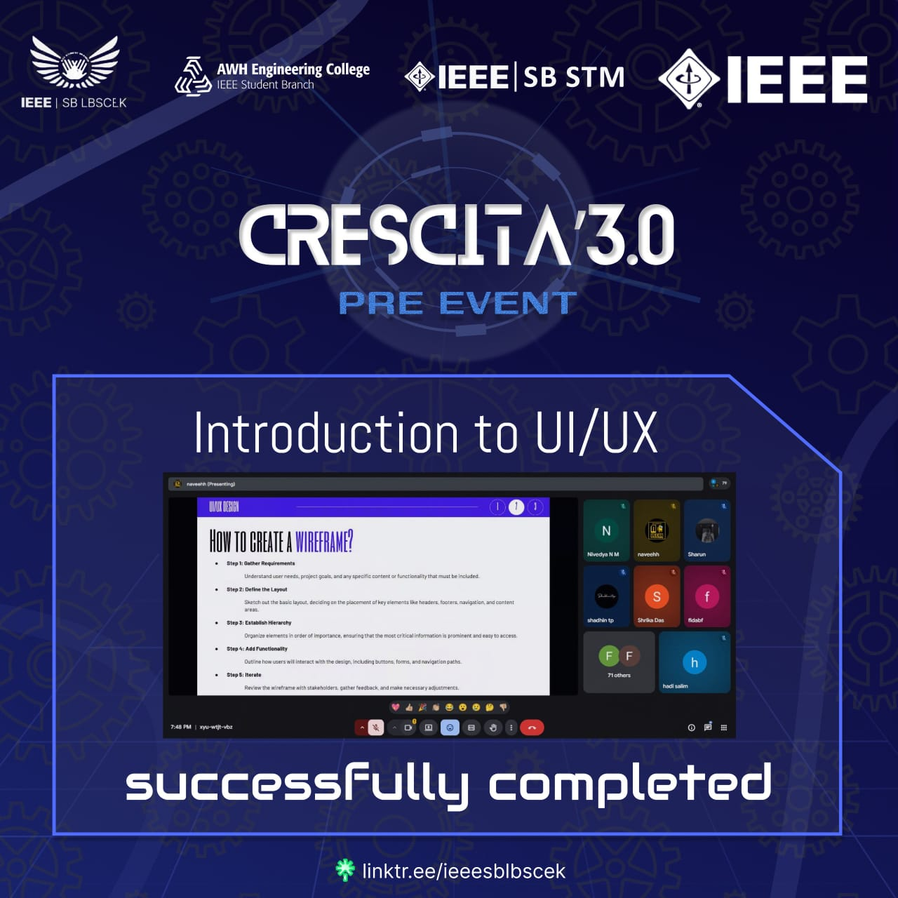
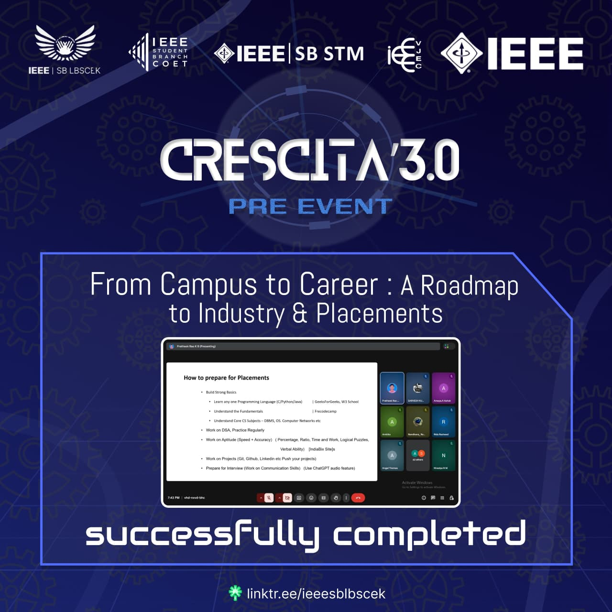
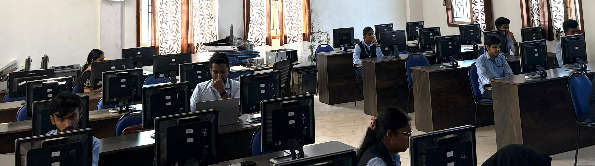
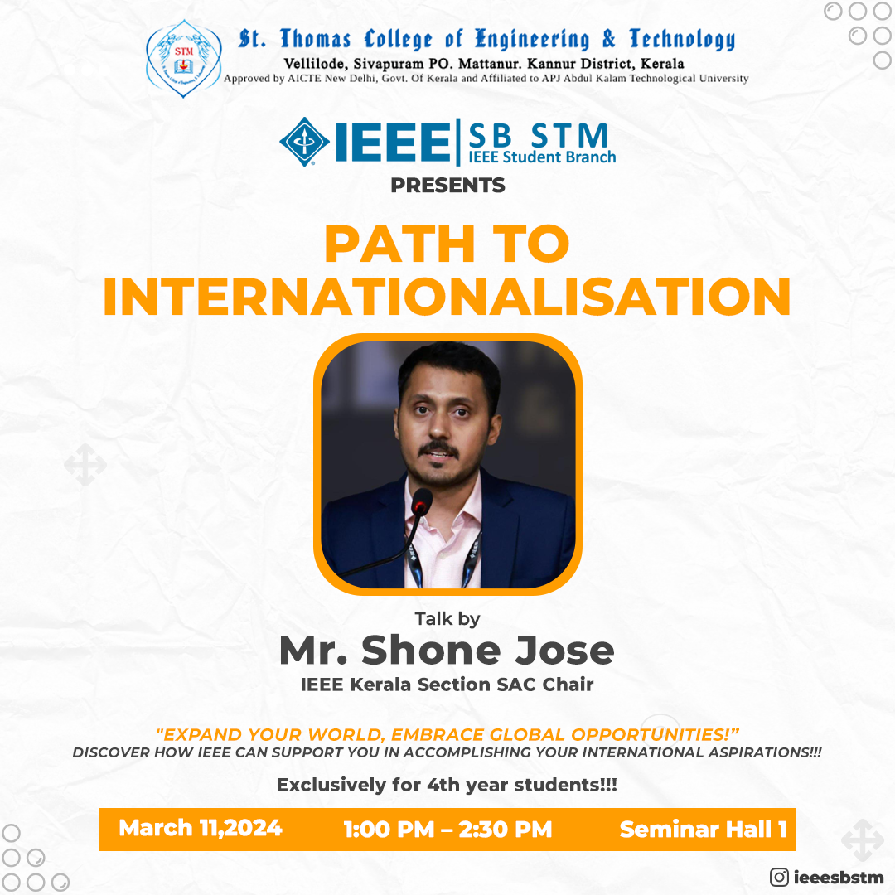
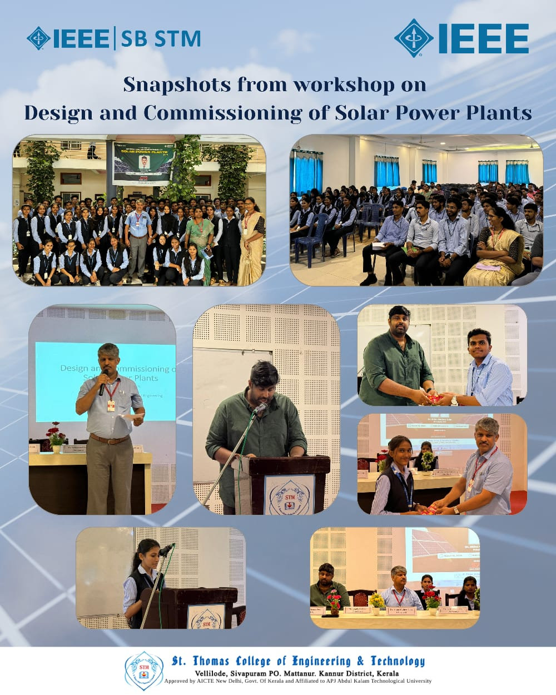
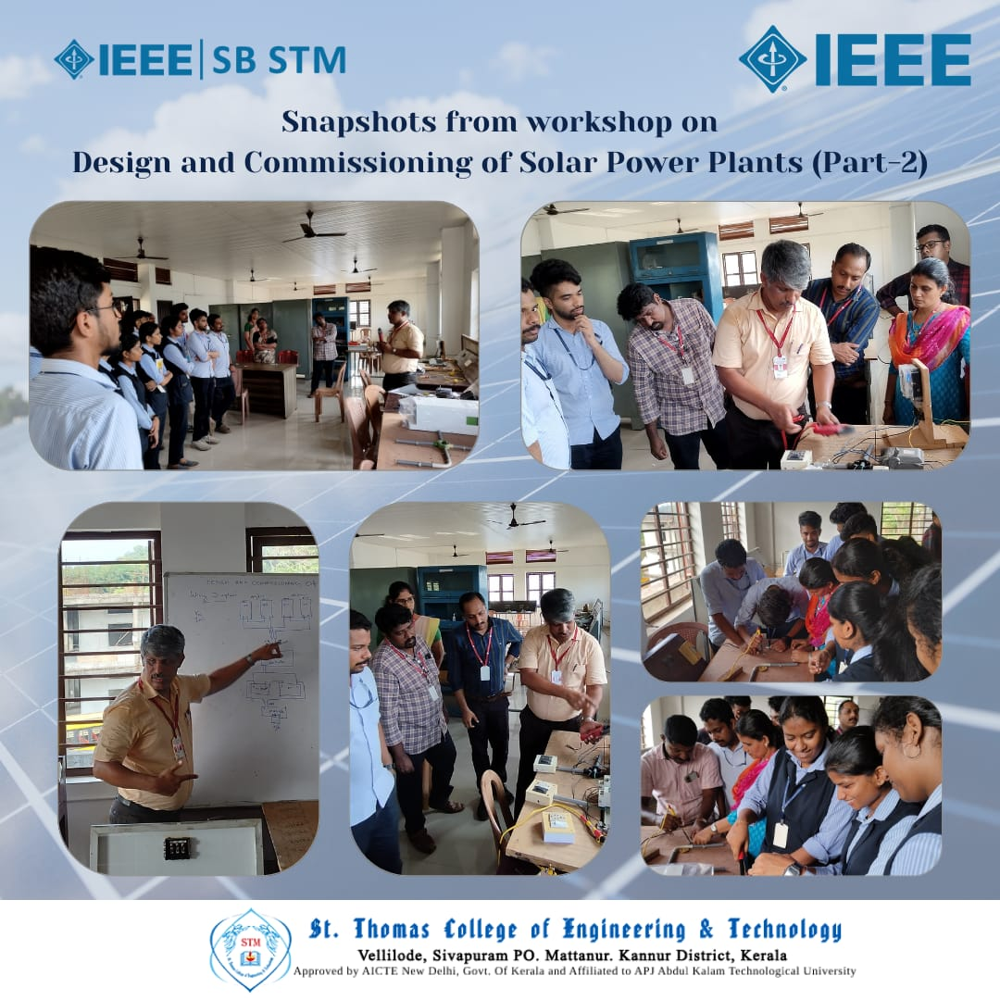
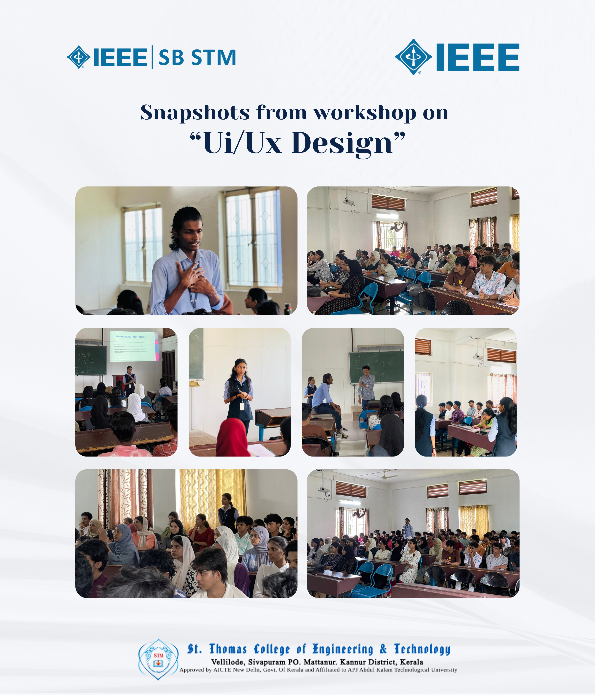
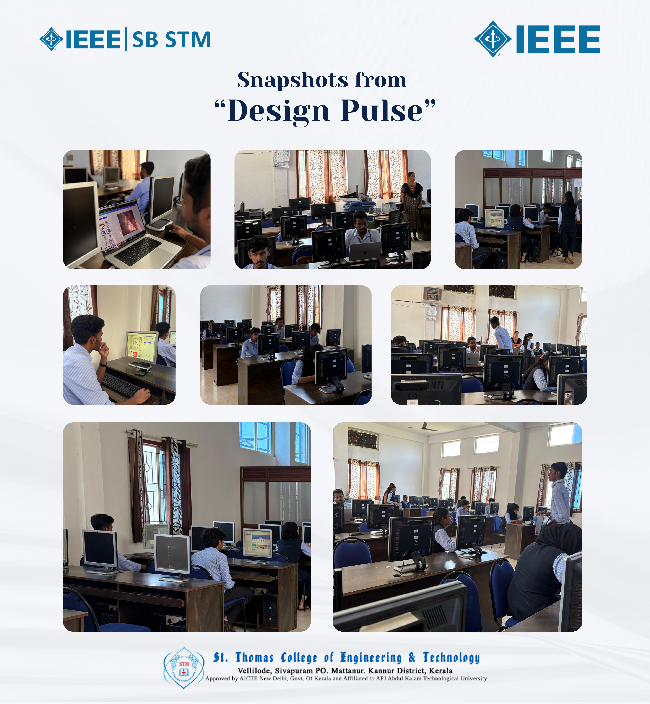
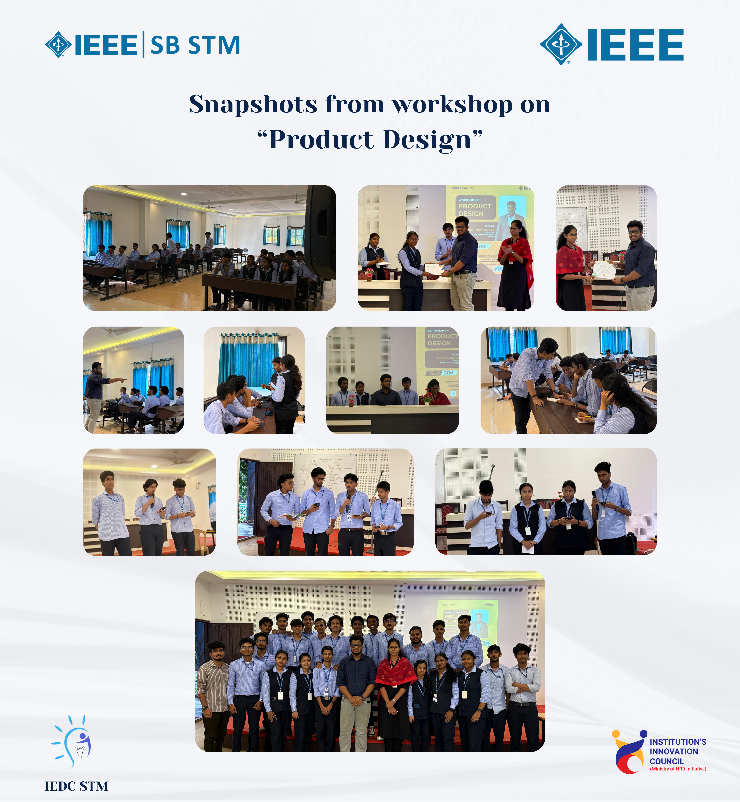

Events & Activities
Workshops, seminars, competitions, and more
IEEE SB STM organizes diverse events throughout the year to build technical skills, foster networking, and create memorable experiences for our members.
Upcoming Events

Introduction to UI/UX
CRESCITA 3.0 – Pre Event
IEEE SB LBS College of Engineering Kasaragod in collaboration with IEEE SB STM and AWH Engineering College IEEE SB
Navaneeth Narayanan
Designer, IEEE Education Society Kerala Chapter
24 January 2026
7:00 PM – 8:30 PM
- IEEE Members – Free
- Non-IEEE Members – ₹15

From Campus to Career
CRESCITA 3.0 – Pre Event
IEEE SB LBS College of Engineering Kasaragod in collaboration with IEEE SB COET, IEEE SB VJEC and IEEE SB STM
Pratheek Rao K B
Alumni 2021–2025, Programmer Analyst Trainee, Cognizant
01 February 2026
7:00 PM – 8:00 PM
- IEEE Members – Free
- Non-IEEE Members – ₹20
Past Events

Workshop on Flutter
Flutter workshop session organised by IEEE Student Branch of St. Thomas College of Engineering and Technology Kannur was an enlightening experience for those seeking to enhance their knowledge about Flutter, an open-source UI software development toolkit created by Google. The workshop was handled by Mr. Arjun P J, Mr. Vaishakh and Ms. Aryasree from Government College of Engineering Kannur.
The session took place from 9:30 am to 11:35 am and provided participants with deep knowledge on Flutter fundamentals. Around 31 students participated. The purpose of the workshop was to introduce Flutter and provide hands-on experience in building cross-platform applications.
The session was interactive and included presentations and practical demonstrations. Participants engaged actively with the speakers and provided positive feedback. The event aimed to expand knowledge in modern UI development tools and marked a successful initiative by IEEE SB STM to inspire students in emerging technologies.
Executive Committee Selection
📋 Positions Selected
The Executive Committee selection event held on 20 November 2023 at the college library was a significant initiative organized by IEEE SB STM. The session aimed to appoint new members to the executive committee and foster leadership within the IEEE community. The event provided a platform for students to actively participate in organizational roles and contribute to the growth of IEEE at St. Thomas College of Engineering and Technology.
The selection process was designed to identify individuals with leadership qualities and a strong passion for IEEE activities. The event welcomed all interested IEEE members, encouraging inclusivity, diversity, and representation. Participants gained insights into executive responsibilities and developed valuable leadership and teamwork skills.
The event also enabled networking among IEEE members, strengthening collaboration within the student branch. Overall, the selection program was a successful step toward building a vibrant and active IEEE community at STM.
Executive Committee Training
🎓 Guest Mentors
SAC Chair, IEEE Kerala Section
VSAC, IEEE Malabar Hub
Student Rep, IEEE Malabar Hub
The Executive Committee training session was conducted on November 30, 2023, for the members of the IEEE Student Branch, St. Thomas College of Engineering and Technology, Kannur. The online session was attended by Mr. Shone Jose (SAC Chair, IEEE Kerala Section), Mr. Sreeram (VSAC, IEEE Malabar Hub), and Mr. Varum (Student Representative, IEEE Malabar Hub).
The training began with introductions from the executive committee members followed by introductions from the guest mentors. Mr. Sreeram explained the responsibilities of each ExCom role and clarified doubts regarding branch operations and leadership duties. Around 14 executive members participated actively in the session.
The event strengthened understanding of IEEE leadership structure and responsibilities. The session concluded successfully at 8:45 PM with positive feedback from participants.
Inauguration of IEEE Student Branch
🎓 Distinguished Guests & Speakers
Student Chair
Principal, STM
Chair, IEEE Kerala Section
IEEE Code of Ethics Speaker
CEO, Felicitations
Secretary
The inaugural ceremony of the IEEE Student Branch at St. Thomas College of Engineering and Technology, Kannur, was a landmark event that brought together students and faculty in an atmosphere of enthusiasm and anticipation. The ceremony officially marked the beginning of IEEE SB STM and set the foundation for future technical and professional growth.
The session featured an insightful talk by Ms. Theertha Mohandas on the IEEE Code of Ethics, highlighting the importance of ethical responsibility in technology. The event began with a welcome address by Student Chair Ms. Ashika Raveendran, followed by an address from Dr. Shinu Mathew John, Principal of the institution, emphasizing the college's commitment to innovation and technical excellence.
A ceremonial lamp lighting symbolized the illumination of knowledge and pursuit of excellence. Prof. Muhammed Kasim S, Chair of IEEE Kerala Section, shared perspectives on IEEE's global impact. Felicitations were delivered by Mr. Rijo Thomas Jose, CEO, who spoke about the real-world relevance of IEEE. Secretary Ms. Krishnendhu S Nair concluded with a vote of thanks, appreciating all contributors.
The ceremony provided a strong ethical, institutional, and technical foundation for the student branch and marked a significant milestone in the IEEE community at STM.
Technical Talk on "IEEE Standards"
🎤 Speaker
Expert in Standards Development
The technical talk on "IEEE Standards" organized by IEEE SB STM provided a comprehensive exploration of the importance of standards in the technology landscape. Conducted on 7 December 2023, the session aimed to deepen participants' understanding of industry standards and the role IEEE standards play in shaping modern technological advancements.
The session was delivered by Prof. Muhammed Kasim S, an expert in standards development. The talk included practical examples and case studies that demonstrated real-world applications of standards across various technological domains. The program welcomed both IEEE and non-IEEE participants, ensuring accessibility to a wider audience.
The focused one-hour session offered valuable insights while encouraging interaction and discussion. The event strengthened awareness of IEEE standards and fostered a culture of learning and innovation within the IEEE SB STM community.
Technical Quiz "Trivia"
🎯 Competition Format
22 Feb - 20 Questions
23 Feb - 16 Finalists
18 Marks & Above
IEEE SB STM conducted "Trivia – Technical Quiz Competition," a two-stage technical quiz designed to test students' knowledge across various engineering and technology domains. The first round was held online on 22 February 2024, attracting 61 participants who answered 20 technical questions. Students scoring above 18 marks qualified for the final round.
Sixteen finalists advanced to the second round held in Seminar Hall 1 on 23 February 2024. The final round featured interactive and challenging quiz segments that tested analytical thinking, technical depth, and teamwork. Winners were awarded prizes in recognition of their performance.
The event promoted healthy competition, collaborative learning, and intellectual growth within the IEEE student community. It served as a platform for students to demonstrate their technical abilities while expanding their knowledge of emerging technologies and engineering principles.

Technical Talk on "Path to Internationalisation"
🎤 Speaker
SAC Chair, IEEE Kerala Section
IEEE SB STM organized a seminar titled "Path to Internationalisation" aimed at guiding students toward global academic and professional opportunities. The session was led by Mr. Shone Jose, IEEE Kerala Section SAC Chair, under the theme "Expand Your World, Embrace Global Opportunities."
The seminar focused on how IEEE membership can support international aspirations, including studying abroad, attending global conferences, and collaborating with professionals worldwide. Through an engaging presentation, the speaker explained strategies for leveraging IEEE resources, publications, and networking platforms to access global exposure.
The session encouraged interaction, discussions, and questions, making it a collaborative learning experience. Participants gained insights into cross-cultural communication, adapting to diverse environments, and the importance of global engagement in technological advancement. The event successfully inspired students to broaden their horizons and explore international pathways through IEEE.

Workshop on "Design and Commissioning of Solar Power Plants (Part-1)"
🎤 Resource Person & Key Participants
Principal, STM
Welcome Address
Felicitation
IEEE SB STM conducted a workshop titled "Design and Commissioning of Solar Power Plants (Part-1)" led by Dr. Shinu Mathew John, Principal of STM. The session began with a welcome address by Ms. Ashika Raveendran, followed by felicitation by Mr. Rijo Thomas Jose. Prize distribution for the Technical Quiz "TRIVIA" was also held as part of the program.
The resource person shared real-life experiences in solar power implementation and explained key electrical concepts such as voltage, current, and system architecture using block diagrams. Participants were introduced to on-grid and off-grid solar plant models, design principles, and commissioning procedures. The workshop provided comprehensive insights into the technical aspects of solar energy systems and their practical applications.
The workshop emphasized collaboration, technical knowledge sharing, and practical applications in renewable energy systems. The session concluded with a vote of thanks by the IEEE SB Secretary. The event provided a strong foundation in solar energy design and served as an effective starting point for future sessions in the workshop series.

Workshop on "Design and Commissioning of Solar Power Plants (Part-2)"
🎤 Resource Person
Principal, STM
IEEE SB STM conducted Part-2 of the workshop series on "Design and Commissioning of Solar Power Plants", handled by Dr. Shinu Mathew John, Principal of STM. The session focused on the practical and hands-on aspects of creating a functional solar power plant system.
The workshop covered site selection principles including solar exposure, terrain suitability, and obstruction analysis to ensure optimal energy capture. Participants learned how planning and system design directly influence long-term efficiency and sustainability. The session demonstrated panel positioning, battery integration, MPPT controller connection, and inverter setup.
Emphasis was placed on system testing, grid approval procedures, and long-term maintenance strategies to ensure safe and efficient operation. The hands-on format allowed participants to gain real-world technical exposure to renewable energy systems, strengthening their understanding of sustainable power solutions.

Workshop on UI/UX
👩🏫 Resource Persons
UI/UX Expert
UI/UX Expert
IEEE Student Branch STM conducted a 3-day hands-on UI/UX workshop for first-year students, led by Mr. Navaneeth Narayanan and Ms. Krishnendhu S Nair. The workshop introduced participants to the fundamentals of User Interface (UI) and User Experience (UX) design using Figma, an industry-leading design tool.
The sessions began with core UI/UX concepts, focusing on usability, consistency, intuitive design, and the difference between visual design and user interaction. Students were guided through the design workflow, including user research, wireframing, and interface planning. The workshop then progressed to practical prototyping in Figma, where participants created interactive mockups simulating real user experiences.
Students experimented with layouts, color systems, and interactive components through guided exercises and real-world design challenges. By the end of the program, participants gained a strong foundation in UI/UX design principles and hands-on Figma skills that support future creative and technical projects in digital design.

Design Pulse – Poster Designing Competition
IEEE SB STM organized Design Pulse, a poster designing competition aimed at encouraging students to showcase their creativity and graphic design skills. The event provided a platform for participants to apply poster design principles, including color theory, typography, and composition through a hands-on challenge.
With a prize pool of ₹1000, the competition welcomed both IEEE and non-IEEE students, promoting inclusivity and healthy competition. IEEE members were allowed free participation, while non-members registered with a nominal fee, encouraging student engagement with the IEEE community. Participants were given 45 minutes to design a poster based on a predefined theme, simulating real-world design environments that demand creativity under time constraints.
The fast-paced format pushed students to think critically and execute ideas efficiently. Beyond competition, the event strengthened participants' artistic, technical, and problem-solving abilities. It emphasized the importance of visual communication in academic and professional settings, making the program both educational and inspiring.

Workshop on Product Design
🎤 Speaker & Key Participants
Director, Bumblebee Instruments
Chair, IEEE SB STM
Vice Chair
Branch Counsellor
The One-Day Workshop on Product Design was organized by IEEE SB STM in association with IEDC STM and the Institution's Innovation Council (IIC). The session was led by Mr. Abhinav Rajeev, Director of Bumblebee Instruments Pvt. Ltd., who introduced students to the fundamentals of product design, from idea generation to prototype development.
The workshop focused on design thinking, emphasizing user-centric design, iterative prototyping, and real-world validation. Drawing from industry experience, the speaker highlighted challenges in product development and provided practical strategies to overcome them. Students actively engaged in discussions and participated in an idea pitching competition where teams simulated startup environments and presented innovative product concepts.
This activity encouraged creativity, collaboration, and entrepreneurial thinking. The event began with a welcome address by Navaneeth Narayanan, Chair of IEEE SB STM, followed by speaker introduction by Amshiga Ranjith. The session concluded with a vote of thanks by Sourav K K, Vice Chair, and a token of appreciation presented by Dr. Amitha I C, Student Branch Counsellor. Overall, the workshop provided an enriching learning experience, inspiring participants to approach problem-solving with a design-oriented mindset.
Online Workshop on Fundamentals of Blockchain and its Future Applications and Research Directions
The Department of Computer Science and Engineering (GeekZone), in association with IEEE SB STM, organized an online workshop titled “Fundamentals of Blockchain and its Future Applications and Research Directions” for S7, S5, and S3 students along with IEEE members. The workshop covered blockchain fundamentals, smart contracts, real-world applications, and included a live demonstration of decentralized transactions. The session enhanced technical awareness and encouraged interest in blockchain research and future opportunities.
Types of Events
Workshops & Seminars
Hands-on technical training in emerging technologies and professional skills.
Tech Talks & Lectures
Industry experts and alumni sharing real-world insights and career experiences.
Competitions
Hackathons, coding contests, and robotics challenges to showcase skills and compete.
Networking Events
Meet professionals, alumni, and peers. Build relationships and explore opportunities.